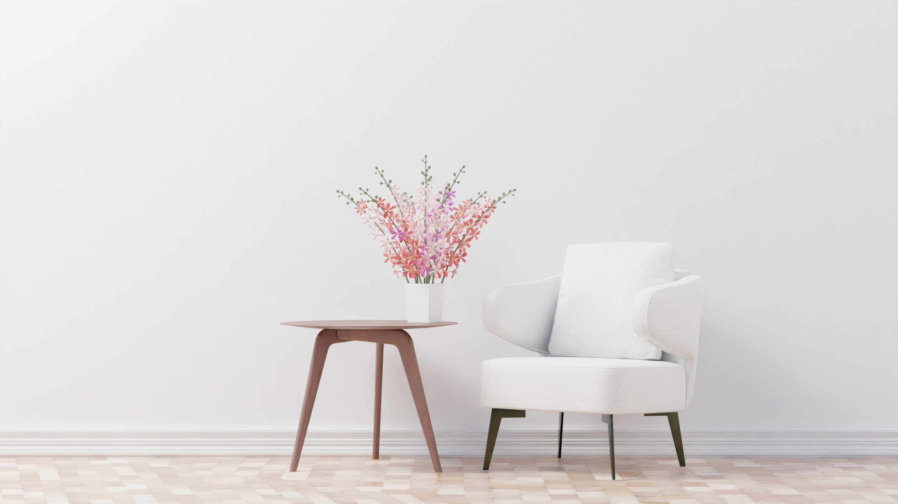

Websites en digitale oplossingen met zorg gemaakt.
Jij zorgt voor je cliënten. Ik zorg voor jouw website of zorgtoepassing.
Ik help kleinschalige (zorg)praktijken aan een website of praktische digitale oplossingen.

Zorg en technologie
komen samen
Vanuit mijn werk als neuropsycholoog weet ik hoe belangrijk duidelijke informatie, gebruiksgemak en aandacht voor mensen zijn.
Met Zorgpixel combineer ik mijn ervaring in de zorg met mijn interesse in technologie. Zo maak ik websites en digitale oplossingen die duidelijk, prettig en praktisch zijn.
Met kennis van de zorg.
Met oog voor de gebruiker.